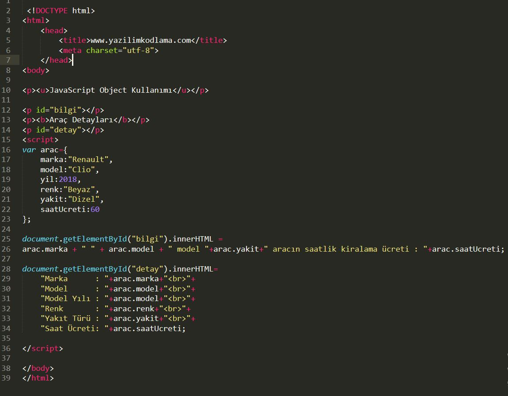
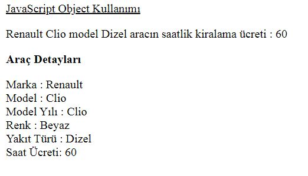
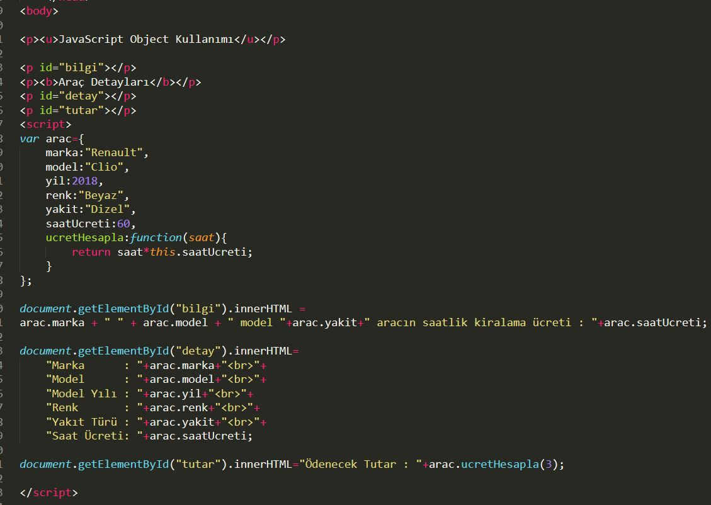
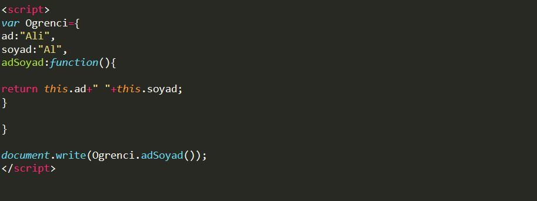

.gif) Ders 8: Olaylar(Events)
Ders 8: Olaylar(Events)5 adet veri tip, 3 adet Object tipi bulunan javaScript dilinde veri tiplerini Number, String, Boolean, Undefined, ve Null .
Object tipini ise fonksiyon, dizi, nesne (object) gibi referanslar oluşturmaktadır.JavaScript’te nesne oluşturmak için { } süslü parantezler kullanılır.
var arac={ };
var ogrenci={ };
Yukarıdaki şekilde bir tanımlama yapıldığında içinde hiçbir şey bulunmayan arac ve ogrenci nesneleri oluşturulmuş olur.
var arac={
marka:"Renault",
model:"Clio",
yil:2018,
renk:"Beyaz",
yakit:"Dizel",
saatUcreti:60
};

arac isimli Object (nesne) tanımlaması ve bu nesneye ait özellik tanımlaması yapılarak bu özelliklerin sayfada yazdırılması sağlanmakta.

Şimdi de nesnemize metot tanımlaması yapalım. Metot tanımlamasını yukarıdaki örnek üzerinde gerçekleştireceğiz. Nesnemize ucretHesapla isminde bir metot tanımlayacağız.
Bu fonksiyon dışarıdan bir parametre alarak çalışacaktır. Dışarıdan gönderilen saat bilgisini saatUcreti ile çarparak ödenecek tutarın hesaplanması görevini üstlenecektir.

NOT:Nesne içindeki özelliklerden biri metot içinde kullanılacaksa bu özellik this anahtar sözcüğü ile kullanılmalıdır
ÖRNEK

Yukardaki örnektede ad ve soyad fonksiyon ile return edilerek ekrana yazdırdı.